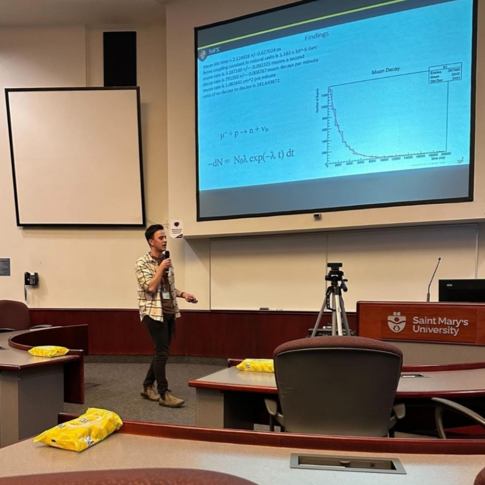

About Me

I am currently in the final year of my Computer Science degree at St. Francis Xavier University, where my coursework is concentrated on machine learning and artificial intelligence. This follows the completion of my honours degree in Physics from the same institution in May 2023, specializing in high-energy physics. My goal is to go to graduate school where I can combine physics and machine learning to better understand the foundations of the universe.
Some research I have conducted in the field includes In my honours thesis, "Finding Energy Difference in Relativistic Cosmic Muons," I utilized a scintillator Muon detector. I calibrated the detector and programmed a ROOT macro to analyze muon behaviour, including lifetime decay rate and energy calculations by taking the detector to different elevations and measuring the flux difference. This research culminated in the presentation of my honours thesis.
Subsequently, I delved into charged lepton flavour violation, aiming to uncover new physics beyond the standard model. Here, I got acquainted with the BaBar analysis framework and developed ROOT macros for data analysis provided by Dr. Ahmed, focusing on the invariant mass in the upsilon (2s) decay. My machine learning coursework includes a project that aims to optimize the detection of this rare phenomenon.
Lastly, I'm working on a paper based on "Investigating Cosmic Muon Behavior Using Monte Carlo Simulations" with Dr. Ahmed. This unique study uses a time-reversed technique, starting from sea-level measurements and simulating upward through the atmosphere. Developed in C++, our Monte Carlo simulation offers insights into muon dynamics, considering factors like energy, height, and angle of entry. This method is not only novel but also more efficient than conventional simulations.